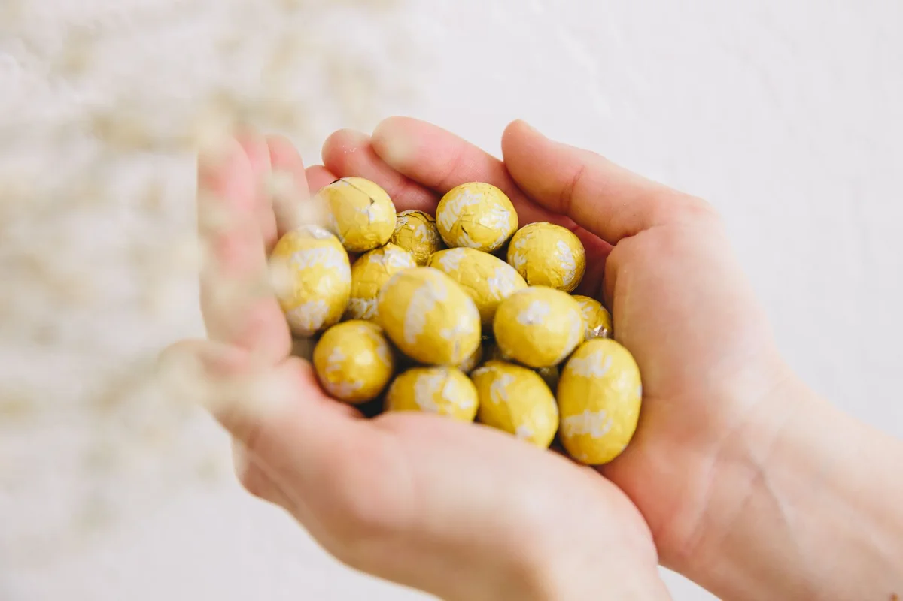
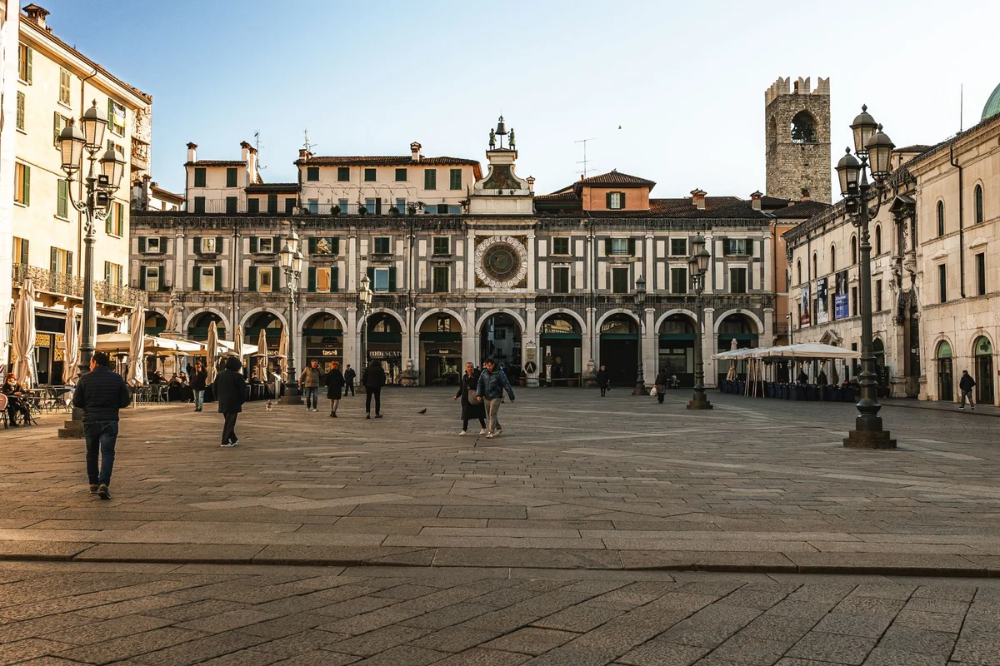

Introduction
In April 2026, Turin quietly pulled off one of the most satisfying upsets in European food culture. The Piedmontese city dethroned Brussels and Paris to claim the title of Europe's chocolate capital, according to a study by Avis that factored in the number of chocolatiers, chocolate attractions, and monthly search volume. With 233 chocolatiers, five dedicated chocolate attractions, and nearly 50,000 monthly searches for "Turin chocolate," the verdict was hard to argue with. For anyone who has ever bitten into a proper gianduiotto, the result feels less like a surprise and more like long overdue recognition.
But the story of Turin gianduiotto chocolate and its Napoleonic history is far richer than any ranking can capture. This small, foil-wrapped wedge of hazelnut chocolate carries a war story inside it. It was born not from culinary ambition but from scarcity, improvisation, and the particular genius of Piedmontese confectioners caught between an emperor's blockade and a city that refused to give up its chocolate.
Understanding where the gianduiotto comes from tells you something essential about Turin itself: a city that turns constraints into culture, and necessity into art.
Napoleon's Blockade and the Birth of a Chocolate Icon
In 1806, Napoleon Bonaparte imposed the Continental Blockade, a sweeping embargo designed to strangle British trade by cutting off imports from British-controlled colonies and sea routes. For most of Europe, this meant economic disruption. For Turin's chocolate makers, it meant something more immediate: the cocoa was running out.
At the time, Turin was already a city with a serious chocolate culture. The court of the House of Savoy had embraced cacao since the 17th century, and the city's cioccolatieri had built a reputation for refined confectionery. Suddenly, the raw material that underpinned their entire craft was scarce and wildly expensive. They needed a substitute, or at least a stretching agent, that wouldn't ruin the flavour profile they had spent generations perfecting.
The answer was growing in the hills just south of the city. The Tonda Gentile delle Langhe, a prized variety of hazelnut cultivated in the Piedmontese Langhe region, was abundant, affordable, and extraordinarily flavourful. Local chocolatiers began grinding roasted hazelnuts into a fine paste and blending it with whatever cacao they could source, along with sugar. The resulting mixture was smoother than standard chocolate, slightly sweeter, and deeply nutty in a way that felt entirely native to the region.
The blend was eventually named gianduja, after the popular Carnival mask of Turin, a cheerful, wine-loving character who embodied the Piedmontese spirit. The first individually wrapped version of the gianduja chocolate, the teardrop-shaped gianduiotto, was introduced in 1865 by the confectionery house Caffarel, making it the first chocolate in history to be individually wrapped and hand-distributed at Carnival. The wrapping itself was a small revolution in food retail at a time when most chocolate was sold in bulk.
What Napoleon intended as economic warfare ended up gifting the world one of its most beloved chocolate formats. History rarely delivers such clean ironies.
What Actually Makes a Gianduiotto Different from Everything Else
The gianduiotto is not simply chocolate with hazelnuts added. That distinction matters enormously to anyone who takes the product seriously, and in Turin, everyone takes it seriously.
A genuine gianduiotto is made from a base of gianduja paste, which by Italian law (under the EU's protected designation framework) must contain a minimum of 32% Piedmontese Tonda Gentile hazelnuts. The paste is blended with cocoa solids and sugar, but it is never tempered and moulded like a standard chocolate. Instead, it is extruded warm and allowed to cool into its characteristic boat or ingot shape, giving it a texture that is softer and more yielding than bonbon chocolate, almost crumbling at the first bite before melting entirely.
The flavour balance is the real achievement. The best gianduiotti achieve a near-equal conversation between roasted hazelnut and dark cocoa, with neither dominating. Too much hazelnut and the result tastes like spread. Too much cocoa and the Piedmontese identity is lost. The ratio is everything, and every serious chocolatier in Turin guards their formula accordingly.
There is also the question of what a gianduiotto is not. It is not Nutella, despite the shared heritage. Nutella, created by Ferrero in Alba in 1964, is a spreadable product made with a much higher proportion of sugar and vegetable fat. The gianduiotto predates it by over a century and operates in an entirely different register: artisanal, firm, individually portioned, and designed to be savoured slowly rather than spooned from a jar.

Turin's 233 Chocolatiers: A Living Ecosystem, Not a Museum Piece
One of the more remarkable facts behind Turin's 2026 ranking is that the city's chocolate culture is not a heritage attraction preserved in amber. It is a functioning, competitive, continuously evolving industry with 233 active chocolatiers operating across the city and its surroundings.
Some names carry the full weight of history. Caffarel, founded in 1826, is the house that commercialised the gianduiotto. Peyrano, established in 1915 in the Crocetta neighbourhood, is arguably Turin's most aristocratic chocolatier, still producing gianduiotti and pralines with an almost liturgical seriousness. Guido Gobino, operating since 1964 but reborn in the 1990s under a new generation, has become the benchmark for modern Turinese chocolate craft, winning international awards and developing the tourinot, a miniaturised version of the gianduiotto that has become iconic in its own right.
Beyond these anchors, dozens of newer artisan labs have opened in the past decade, many of them focused on single-origin cacao, reduced-sugar formulations, and experimental gianduja blends. The neighbourhood of San Salvario has become a particular hub for this younger generation, with several small-batch producers operating alongside specialty coffee bars and natural wine shops.
The city also hosts CioccolaTò, one of Europe's largest chocolate festivals, which takes place each autumn along Via Roma and Piazza Vittorio Veneto, drawing hundreds of thousands of visitors and featuring producers from across Italy and beyond. The 2025 edition attracted an estimated 800,000 visitors over ten days, a figure that makes Brussels' Chocolate Week look modest by comparison.
Five dedicated chocolate attractions, including the Museo del Cioccolato and tasting experiences inside historic confectionery houses, round out an infrastructure that no other European city currently matches in depth.
The Contrarian Case: Why Turin Beats Brussels More Decisively Than Any Ranking Shows
Most coverage of Turin's 2026 coronation frames it as a pleasant surprise, a charming underdog story. That framing undersells the argument considerably.
Brussels has long traded on its chocolate reputation, and Belgian pralines are genuinely excellent. But the Belgian capital's chocolate scene is, in large part, a tourism infrastructure built around a handful of premium brands: Neuhaus, Leonidas, Godiva. These are global luxury brands now owned by multinational conglomerates. Godiva is owned by a Turkish holding company. Leonidas has over 1,400 franchises worldwide. The "artisan" story in Brussels increasingly requires quotation marks.
Turin's ecosystem, by contrast, is rooted in something that cannot be franchised: a specific agricultural ingredient (the Tonda Gentile hazelnut, which the EU granted Protected Designation of Origin status in 1993), a documented historical narrative tied to a particular crisis and a particular place, and a local consumer culture that actually eats this chocolate year-round rather than buying it as a souvenir.
There is also a class dimension that rarely gets discussed. In Brussels, premium chocolate is primarily sold to tourists and exported. In Turin, cioccolato is woven into daily life. The city's historic caffè storici, including Caffè Baratti and Milano and Caffè Al Bicerin, have been serving bicerin (a layered drink of espresso, chocolate, and cream, invented in Turin in the 18th century) to locals every morning for centuries. That kind of integration between a food product and everyday urban culture is almost impossible to manufacture or replicate.
Paris, for its part, has extraordinary chocolatiers, but the French capital's strength lies in pastry and pâtisserie more broadly. Chocolate in Paris is one excellence among many. In Turin, it is the excellence, and it has been for over 200 years.

Where to Eat, Buy, and Understand Turin Chocolate in 2026
Navigating 233 chocolatiers can feel paralysing. The following is a practical, opinionated shortlist for anyone visiting Turin specifically to engage with its chocolate culture.
For classic gianduiotti: Peyrano on Corso Moncalieri remains the gold standard for traditionalists. Prices run around €35 to €45 per kilogram for hand-selected gianduiotti, which is serious money but reflects serious craft. Their shop, housed in a 1920s Art Deco space, is worth the visit alone.
For modern interpretations: Guido Gobino on Via Cagliari is the address for anyone curious about where gianduja is going next. The tourinot comes in several hazelnut-to-cocoa ratios, allowing side-by-side comparisons that function almost like a tasting flight.
For the full historical context: A morning at Caffè Al Bicerin in Piazza della Consolata, ordering the bicerin as it has been served since 1763, situates the gianduiotto in its broader cultural timeline. The café is tiny (roughly twelve seats), opens at 8:30 am, and closes by 7:30 pm. Expect to wait briefly on weekends.
For market hunting: The Mercato di Porta Palazzo, Europe's largest open-air market, has several stalls selling Piedmontese food products including locally produced gianduja and bulk hazelnuts from the Langhe. Prices here are considerably lower than boutique shops, and the quality from established vendors is reliable.
Seasonal note: If timing is flexible, the CioccolaTò festival (typically held in late October or early November) offers the most concentrated opportunity to taste across producers in a single visit. Free entry, outdoor setting along the main boulevards, and a density of product that requires strategic pacing.
Final Thoughts
The gianduiotto is one of those rare food stories where every layer holds up under scrutiny: the history is real, the ingredient is specific and protected, the technique is genuinely distinctive, and the cultural integration runs deep enough that Turinese people would eat it regardless of whether any international ranking existed. The 2026 designation as Europe's chocolate capital simply made official what the city's residents have known for a long time.
What the Napoleonic blockade ultimately produced was not just a recipe. It was a philosophy of flavour: that constraint, properly handled, creates identity. Turin's chocolatiers were not looking to reinvent chocolate when they reached for the hazelnuts of the Langhe. They were trying to survive. The fact that survival led to one of the most beloved confections in European history says something worth remembering the next time a food trend promises innovation through abundance.
If this piece has given you a reason to finally book that trip to Turin, or to seek out a proper gianduiotto the next time you spot one, share it with someone who takes chocolate as seriously as they should.
Frequently Asked Questions
What is a gianduiotto and how is it different from regular chocolate?
A gianduiotto is a small, individually wrapped chocolate made from gianduja paste, a blend of finely ground Piedmontese Tonda Gentile hazelnuts (minimum 32% by Italian standards), cocoa solids, and sugar. Unlike standard moulded chocolate, it is extruded warm and cooled into its distinctive wedge shape, giving it a softer, more crumbly texture. The flavour is a balanced combination of roasted hazelnut and dark cocoa, and it predates Nutella by over a century despite sharing the same core ingredient.
Why was the gianduiotto invented?
The gianduiotto was invented in the early 19th century in Turin as a direct response to Napoleon Bonaparte's Continental Blockade of 1806, which severely restricted cocoa imports from the Americas. Piedmontese chocolatiers, facing a critical shortage of their primary ingredient, began blending their reduced cacao supply with the abundant and flavourful Tonda Gentile hazelnuts grown in the nearby Langhe hills. The resulting gianduja paste was first produced in solid, individually wrapped form by the Caffarel confectionery house in 1865.
Why was Turin named Europe's chocolate capital in 2026?
Turin was named Europe's chocolate capital in 2026 based on a study by Avis that evaluated cities across three key metrics: number of chocolatiers, number of chocolate-specific attractions, and monthly search volume for chocolate-related terms. Turin scored highest across all three categories, with 233 active chocolatiers, five dedicated chocolate attractions, and nearly 50,000 monthly searches for 'Turin chocolate', placing it ahead of Brussels and Paris.
Where can you buy the best gianduiotto in Turin?
The most celebrated addresses for classic gianduiotti in Turin include Peyrano on Corso Moncalieri, known for its traditionalist approach and Art Deco shop, and Caffarel, the historic house that first commercialised the product in 1865. For a more contemporary take, Guido Gobino on Via Cagliari is widely regarded as Turin's most innovative chocolatier and produces the award-winning miniature tourinot. Caffè Al Bicerin in Piazza della Consolata also serves the traditional bicerin, a layered espresso and chocolate drink that pairs naturally with a gianduiotto on the side.
What is the difference between gianduiotto and Nutella?
Both gianduiotto and Nutella trace their origins to the Piedmontese tradition of combining hazelnuts with chocolate, but they are entirely different products. The gianduiotto is a solid, artisanal confection made primarily from high-quality gianduja paste with a minimum 32% hazelnut content, produced since 1865. Nutella, created by Ferrero in Alba in 1964, is a spreadable product made with a significantly higher proportion of sugar and vegetable fat, designed for mass-market consumption. The gianduiotto predates Nutella by nearly a century and operates as a fine confectionery item rather than a pantry staple.
Is Turin's chocolate festival worth visiting?
Yes. CioccolaTò, Turin's annual chocolate festival held typically in late October or early November, is one of the largest chocolate events in Europe. The 2025 edition drew an estimated 800,000 visitors over ten days. Entry is free, and the festival is held outdoors along Via Roma and Piazza Vittorio Veneto, with producers from across Italy and Europe presenting products for tasting and purchase. It is the most efficient way to sample Turin's full range of chocolatiers in a single visit.